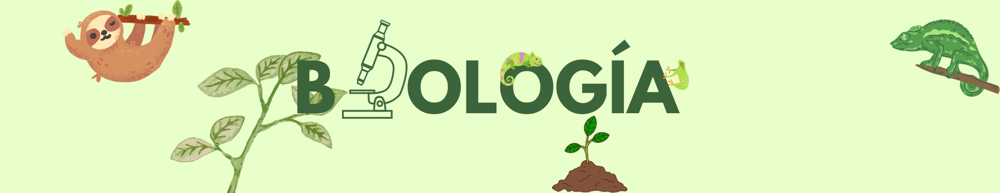
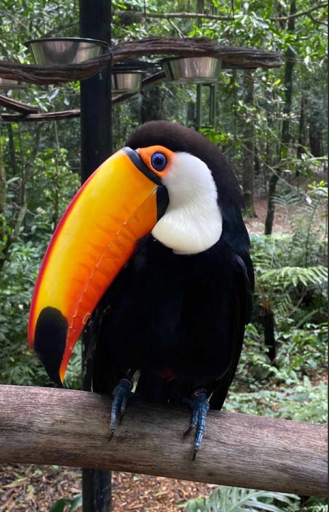

TUCÁN
Se caracterizan por poseer un pico muy desarrollado y de vivos colores. Miden entre 18 y 65 cm.

SOBRE NOSOTROS
Estudiantes de la Universidad Técnica Nacional, en busca de una mayor facilidad de aprendizaje.
TORTUGAS
Se puede encontrar en los mares tropicales y subtropicales. Su nombre se debe a la capa de grasa que puede encontrarse bajo su caparazón.
EL MUNDO DE LA CIENCIA
Diferentes
Niveles
De
Estudio